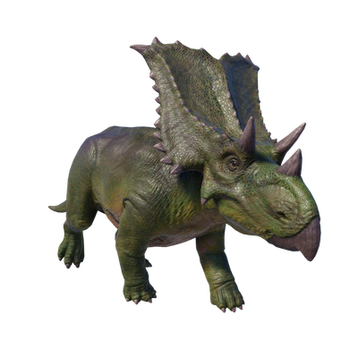

Useful Website
The herbivore Chasmosaurus is a genus of ceratopsid dinosaur with a similar appearance to Triceratops, although it is significantly smaller than its more well-known relative. Chasmosaurus weighs around one and a half tonnes and spans approximately 7.5m in length and is notable for the three horns on its face and large frill on its neck.
